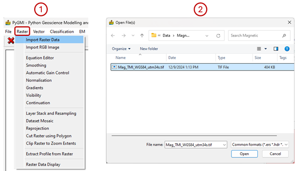
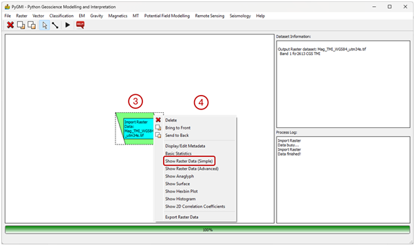
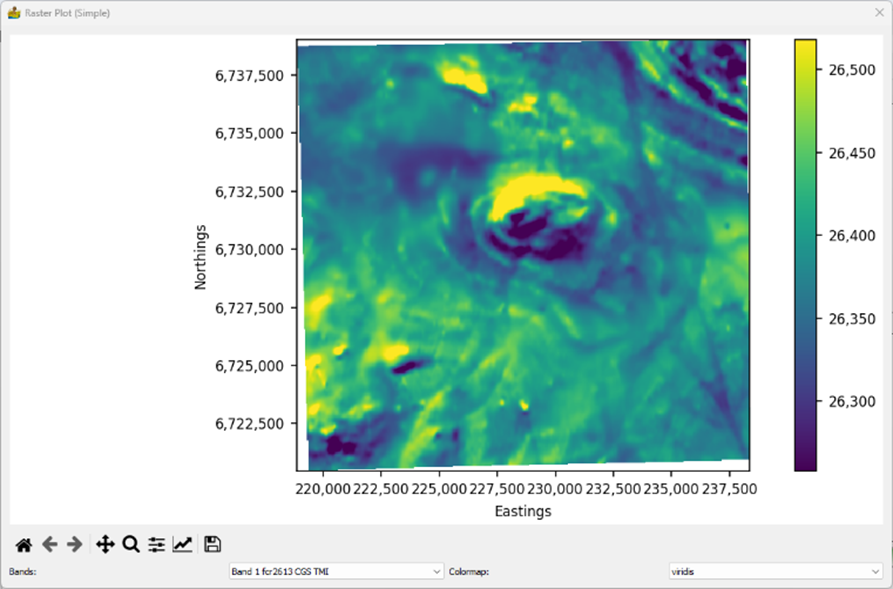
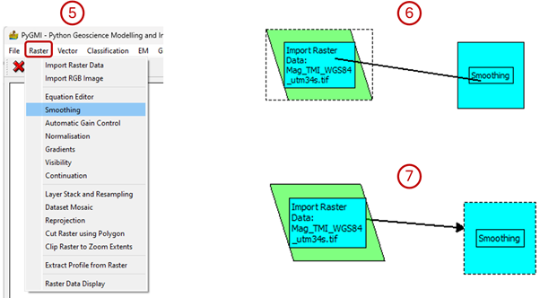
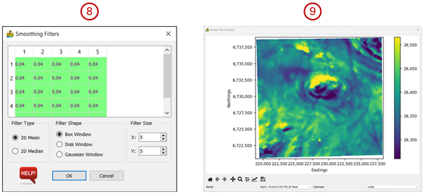
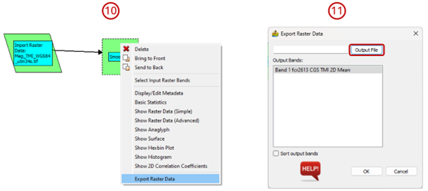

Getting Started Guide: Example Of A Basic Workflow In PyGMI¶
This example shows how to import a raster dataset, view it, select a processing task to perform on the data, connect this module to the input data and export the result.
Import raster data¶
In the Raster menu click on Import Raster Data.
Select a dataset to import.
Once the dataset has been imported the module turns green.

Right-click on the module which has appeared and select Show Raster Data (Simple). A window will pop up displaying the raster data which was imported. Close this window.


Add a second module and connect it to the first module¶
In the Raster menu click on Smoothing. The modules can be moved apart in the interface by clicking on one and dragging it away. Click on the Line Pointer tool on the menu bar.
Draw a line between the Import Raster Data module and the Smoothing module.
Once you let go of the mouse button, a line with an arrowhead should appear.

Double-click on the Smoothing module. A dialog will pop up. You can leave the defaults for now and press OK.
The process log will now turn red indicating that an activity is happening. Once the processing is complete it will turn white again. 9. Right-click on the Smoothing module and select Show Raster Data (Simple) to see the smoothing results.

Export the result¶
Right-click on the Smoothing module and select Export Raster Data.
In the dialog box that pops up, click on Output File and select the location and name of the output raster.
